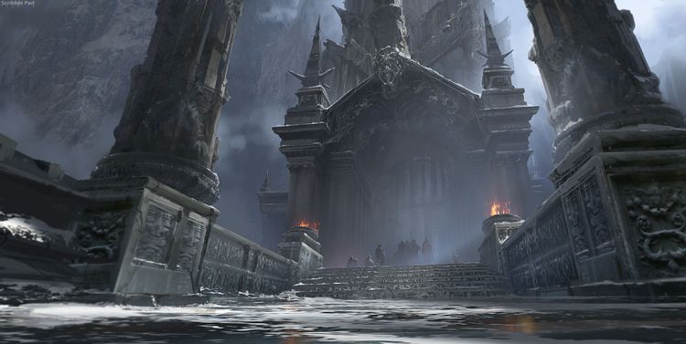

칼바람의 나락

칼바람 나락은 프렐요드에서도 가장 춥고 척박한 땅에 자리잡은, 바닥을 가늠할 수 없는 협곡이다.
리그 오브 레전드의 무작위 총력전(ARAM) 전용 맵이다.
중립 지역(정글)이 없고 공격로가 단 하나다. 그래서 다른 맵들과 다르게 게임 시작부터 끝까지 한타와 대치의 중요도가 매우 높은 맵이다.
양 쪽의 다리 끝에 각 팀의 넥서스가 있으며, 다리에는 팀 별로 2개의 포탑과 1개의 억제기가 있고, 넥서스에는 2개의 포탑이 방어하고 있다.